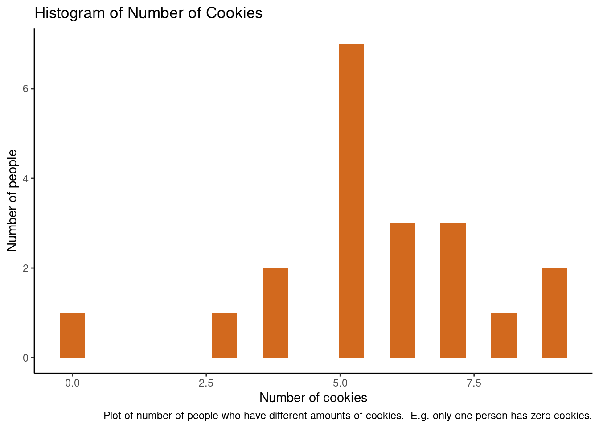
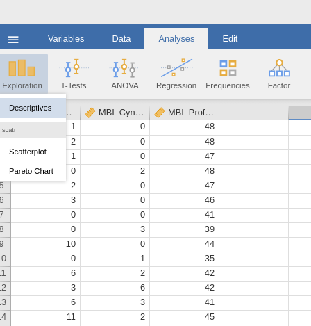
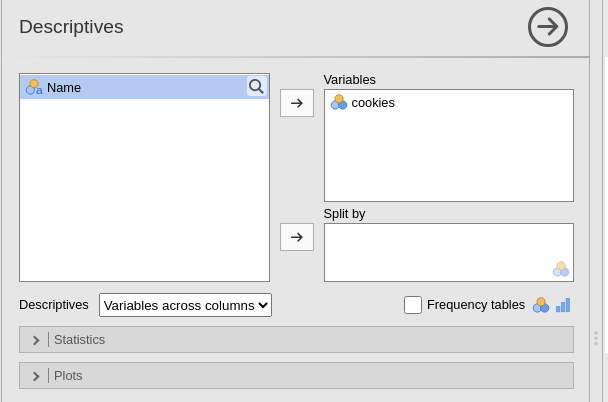
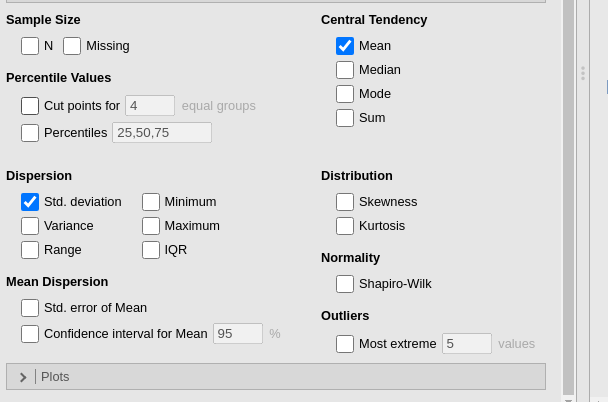
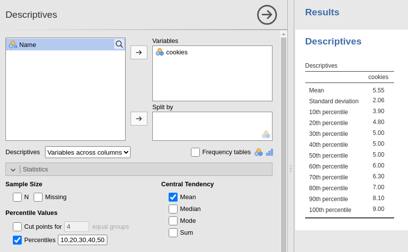
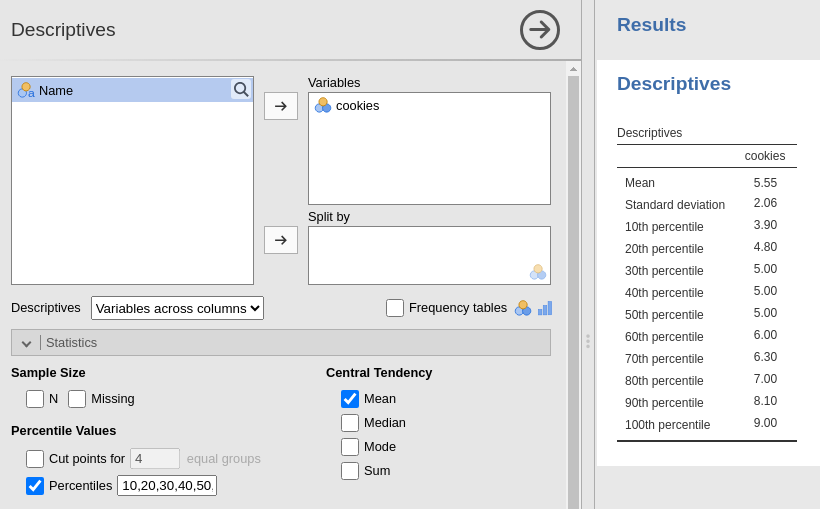

Chapter 12 Miscellaneous
12.1 What Do You Mean by Sub-Heading Levels?
Here are some examples of sub-heading levels. You can find other guides online, but anything more than 3 gets a bit confusing.
12.2 Boundary Conditions In-depth
Remember that it is important to distinguish between a construct, and a test.
In Classical Test Theory terms, General Learning Disability is a condition in which a persons True Ability score - which is directly reflective of the construct - is substantially below the average for the population. Diagnosis of this would include (but not be limited to) tests of intelligence.
Diagnosis of General Learning Disability requires gold standard tests to be administered by a qualified professional, and scores below a cut off would be provided as just one source of evidence for the condition.
Gold-standard tests are required because they provide more accurate estimates of a person’s True score (better testing conditions mean the person will perform closer to their potential; the test will have higher reliability, better items, a representative norm group, and therefore smaller standard error of measurement, meaning fewer likely values for the True Score).
In this case, the test score reflects the construct more precisely than a score obtained using a free test in a loud environment.
So using the same boundary condition for ICAR as e.g the WAIS-5 will lead to far more false positives and false negatives because it will not capture the construct as precisely.
For more about this see chapters six (click for link to Chapter 6), and seven (click for link to Chapter 7), and six (click for link to Chapter 4)
12.3 What Even Are Raw Scores?
Lots of people struggle with this terminology - so let’s do an example.
Imagine we have a test that has 10 items, these can either be Yes (1) or No (0).
We give this test to a norm group and calculate that the average score was 5 out of 10, with a standard deviation of 2.
This average score is on the Raw scale. It’s raw because it has not been processed into a Standard Scale such as a z score, T score or an IQ score.
The limits to this Raw scale are 0 (no answers correct) and 10 (all answers correct).
We give the test to another person and they get 6 answers correct. This means their Raw score for this test is 6 out of 10. The Raw score does not tell us how they compare with the Norm group - it just tells us how many correct answers they got.
Then think of a personality test. The maximum score is 5, the minimum is 1. The norm group average was 2.8, with a standard deviation of 1.4. This is the Raw mean and standard deviation for this personality test. The same person takes this test and gets a score of 2.3. This is their Raw score for the personality test. Once again it does not tell us how they compare with the norm group, it just tells us that they responded between disagree and neutral on average across the questions.
Standard scores can tell us how much a persons score differs from the norm group.
For the ability test we can see that their raw score of 6 is higher than then the raw score of the norm group of 5 - but the standard score also tells us how extreme this difference is.
Their z score for this test would be 0.5, and their T score would be 55. This means that they are above average, but not by much (most people score between 40 and 60).
I’ll let you try the calculations - and then try and converting their personality Raw score to a T score.
12.4 Can’t Seem to Register a Registered Report
A registered report is a two-stage research article. At Stage 1 - the researchers describe in detail what they intend to do for their research project (like a Dissertation Protocol but harder). This plan gets peer reviewed and if it passes, the researchers are given an In-Principal Acceptance by the journal - meaning that if they complete the study as described, they will almost always get published.
At Stage 2 - the study has been completed, analysed, and written up. This document will include the participant demographics, results, and discussion.
You have access to both parts because the Stage 1 report will contain justifications for using their scales that were made prior to data collection.
At Stage 2 you will have the relevant participant characteristics, as well as any critique of the scales that were made after data collection.
12.5 *%$@#ng Percentiles!?
Percentiles1 can be confusing and people struggle with them every year!
So don’t worry, you are not alone…
In simple terms - we are just saying what percentage of the norm group scored below a particular score.
Note that this is not the same as saying that a score is a percentage below the norm group.
For example - imagine there are 20 people in a room and each has bought cookies to snack on.

The plot above shows that the distribution of the number of cookies is bell-shaped.
Most people have five cookies, and there is a spread around this.
We can look at this data in Jamovi:

Now imagine that I enter the room, and in my bag I have seven cookies.
I will have more than some of the people in the room, and fewer than the rest of the people.
The percentile that I would be in for the attribute number of cookies possessed, is the percentage of people who have fewer cookies than I.
Lets look at an example in Jamovi.
Select Exploration -> Descriptives and place cookies in the variables pane:

Under the Statistics dropdown box, de-select everything except the mean and standard deviation options to get a clear table.

Next, select the Percentiles check-box.
This will bring up three quartile values (25th, 50th, 75th percentiles).
Although the number of cookies that I have is included in this table, it is not very accurate since the maximum number in the room is 9.
We can include more percentile values by adding more numbers to the text box.
Below I have gone from 10 to 100 in steps of 10.

We can see that my number of cookies (7) puts me in the 80th percentile for the room, meaning that I have more cookies than 80% of the people in the room.
We can also see that this is not the same as having 80% more cookies than the room. If we took the mean average of 5.55 cookies and work out the percentage (7/5.5)*100, then we get 127%, which means I have 27% more cookies than the room average.
When writing your test manual, you need to make sure that anyone who uses your tool can work out the percentile that the test taker is in - and so you would need to include a table that is similar to the one above.
It might be that there is not enough variation in your norm group scores to allow for unique percentiles for every score (e.g. in the above there are three percentiles associated with a score of 5).
If this is the case, then remove the redundant percentiles from the text-box or adding additional numbers in like in the example below. This will make reporting the percentile scores much easier!

Note that percentiles are covered in more detail in Chapter 3 (Click for link to Chapter 3) and the Statistics Primer (Click for link to Statistics Primer interquartile ranges, Click for link to Statistics Primer z scores and percentiles). There are also videos on MMU Tube that cover how to create a Percentile Table (Click for link to Jamovi video)↩︎